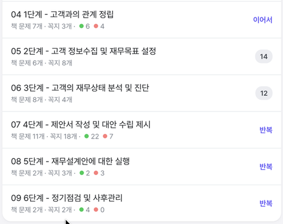

시작은 우연이었다. 단톡방에서 금융연수원 금융 리터러시라는 자격증 얘기가 나왔고 금융연수원이 뭐 하는 곳인가 찾아보다 은행FP 자산관리사라는 자격증을 알게 됐다.
주식, 채권, 소득세, 상속세, 부동산 등 관심 당기는 주제가 한가득이었다. 자격증을 직접적으로 활용할 목적보다 내 자산을 잘 관리해야겠다는 목표가 그려졌다. 시험일까지 7주 남짓 되는 시점이었다.
과연 내가 할 수 있을까 생각부터 이걸 뭐하러 보지, 응시료, 책값 날리는 거 아닌가 하는 우려도 들었다. 하지만 뭐 어때, 일상의 새로움이기도 하고 도전은 아름답잖아.
결국 결심을 하고 시간은 흘러 11월 14일 시험을 치렀고 어제 27일 합격자 발표로 합격을 확인했다.
시험은 1부와 2부로 나뉘어 부 당 100문제가 출제되며 과목별 40점 이상(과락 없이)에 평균 60점 이상이면 합격이다. 한 부만 붙으면 일정 기간 그 부는 면제되고 불합격 부만 다시 보면 된다.
공부 계획
수험서는 인터넷에서 잘 팔리는 걸로 선택했는데 받아 보니 학습 내용은 요점 정리식으로 돼 있고 각 절마다 요점 내용을 변형해 맞는지 틀리는지 묻는 문제가 대부분인 형식이었다. 1, 2부 두 권이라 7주 동안 3주씩 한 권을 보고 1주일은 총정리를 하면 될 것 같았다. 하루 공부 분량도 쪼개서 보니 장 단위로 날짜가 잘 맞는 경우가 많았다. 예를 들어 첫 1주일 계획을 이렇게 잡았다.
- 월, 1-41 페이지, 1-01장 재무설계의 의의 및 재무설계 프로세스
- 화, 42-84 페이지, 1-02장 경제동향 분석 및 예측
- 수, 85-126 페이지, 1-02장 경제동향 분석 및 예측
- 목, 127-167 페이지, 1-03장 법률
- 금, 168-208 페이지, 1-03장 법률
- 토, 밀린 공부 또는 복습
- 일, 복습
마침 내가 일하는 프로젝트가 막바지라 여유가 있었고 점심에 30-40분, 일과 중 한 시간, 집에서 두 시간 정도 공부하고 주말에도 서너 시간 공부하면 충분하지 않을까 생각됐다.
하지만 계획은 계획일 뿐 그날그날 상황은 다 달랐고 주말에는 어쩔 수 없이 거의 공부만 붙들고 있어야 했다. 또한 11월부터는 다른 일을 하게 되면서 집에서 공부하는 시간밖에 낼 수 없었고 주말에 시간을 더 많이 들여야 했다. 집에서 공부하는 건 쉽지 않았다.
점심시간은 주로 전날 공부한 걸 복습했고 나머지 시간엔 책을 위주로 공부하면서 AI에게 모르는 걸 물어봤다.
쉬운 건 쉽고 어려운 건 어려웠다
기본적으로 암기가 대부분인 공부였다. 문제를 보면 신고 기한, 세율, 한도 금액, 나이, 기간 등 수치를 외워야 했고 용어, 법적 기준, 계산이 필요한 공식, 조건에 딸린 항목 등 다양한 지식을 머리에 밀어 넣어야 했다.
어떤 건 쉬웠다. 예를 들어 재무 설계의 절차는 상식적인 수준으로 외우지 않아도 알 수 있고 그에 따른 세부 내용도 무엇인지 일반적인 수준으로 맞춰볼 수 있다.
하지만 1부의 경제동향 분석 및 예측, 2부의 파생금융상품투자는 단순히 암기만 한다든가 상식 수준으로 이해할 수 있는 것이 아니었다. 예를 들어 경제 모형에 따른 시장 움직임, 정책, 외부 충격과 영향 등 다양한 개념이 있는데 이런 건 시간을 들여 이해한 후 보면 원인과 결과가 선명해지면서 모르고 외우는 게 아니라 이해하니까 기억하는 결과가 될 수 있다.
하지만 시간은 부족해지고 이해보다는 진도 나가는 데만 치중하게 됐다.
공부 앱을 만들다
7주가 짧다면 짧지만 많은 걸 봐야 하니 자꾸 지난 걸 잊게 되는 상황이 나타났다. 문제를 반복해서 봐야겠다는 생각이 들었고 영어 단어, 숙어 외울 때 많이 쓰는 "플래시 카드"라는 공부 방식의 앱을 만들기로 했다. 플래시 카드는 공부거리를 카드로 한 장씩 보여주는 방식이고 여기에 시간 흐름에 따라 보여주는 빈도를 조절, 반복함으로써 기억이 최대한 오래 유지되게 만드는 FSRS라는 알고리듬을 사용했다.
내가 책 사진을 찍어 올리면 앱이 문제를 뽑아 저장한 후 반복해서 문제를 내도록 만들었다. Claude를 사용하니 초기 버전 만드는 데는 얼마 걸리지 않았다. 하지만 입맛에 맞게 고치다 보니 시험 전까지 계속 고쳐가며 공부했던 것 같다.

출퇴근할 때도 휴대폰으로 공부할 수 있으니 아주 편하고 효과도 좋았다. 앱에서는 시험일 예상 점수가 80~90점이 되기도 했다. 기억률에 기반한 거라 정확하지는 않지만 말이다.
공부 시작한 지 3주가 지나고 1부 책에 있는 모의고사 두 개를 풀었는데 생각보다 어려웠다. 72점, 64점. 처음엔 책에 없는 내용 아닌가 의심했는데 그렇지 않았다. 표현을 좀 바꾼다든지 관점을 바꿔서 질문한 것들이 어려운 것이었다. 아! 내가 문제와 답만 외운 결과가 됐구나.
문제만 반복해 학습한 부작용이었다. 문제만 뽑아 반복 공부를 하다 보니 문제와 그 답만 기억에 남는 경우가 많았던 것이다. 그래서 시험 몇 주 안 남기고 앱의 문제 출제 방식을 바꿔 내용과 문제 변형도 공부하게 했는데 시간상 심도 있는 개선은 어려웠다.
마지막 1주일
마지막 1주일은 복습 기간으로 정했지만 진도가 늦어지면서 생각보다 복습에 치중하지 못했다. 특히 마지막 부동산 과목은 어려운 내용은 아니지만 암기할 것이 상당히 많아 시간이 걸려서 마지막 주까지 전체 복습과 함께 병행해야 했다.
2부 모의고사도 1부 모의고사와 비슷하게 70점 미만의 점수가 나오면서 불안해졌다. 인터넷에 강의도 있던데 내가 무모하게 책만 가지고 한 건 아닌가? 공부 앱을 만들어 공부 시간을 나눠 쓰다 보니 본 공부를 덜 한 건 아닌가? 공부 앱으로 반복 공부를 해서 초기 공부 내용도 기억나긴 하지만 어딘가 구멍이 많지는 않을까?
그래서 시험 전날엔 공부를 더 들여다본다고 늦게 잤고 긴장해서 잠도 잘 오지 않았다. 하지만 여태 컨디션에 따라 시험 결과가 달라지진 않는 나였기에 마음을 다잡고 시험을 보러 갔다.
실제 시험은 더 어려웠다
비 오는 차분한 11월 14일 토요일 오전, 시험장에 사람들이 하나씩 모여들고 있었다. 전체는 몇백 명은 되는 것 같은데 내가 들어간 시험장에는 10명 정도가 배정이 된 것 같았고 감독관 두 분이 들어왔다.
시험 시간은 100분씩 두 번. 1분당 한 문제를 풀어야 하는 분량이었다. 1부 때는 나름 여유 있겠거니 하고 시험지에 차곡차곡 표시하면서 풀어갔는데 웬걸. 책 모의고사보다도 어려운 거다. OMR 카드 표기 시간이 부족할 뻔해서 2부 시험 때는 카드에 바로 표기하면서 문제를 풀었다.
2부에서는 금융상품 문제에서 시간이 많이 걸린 것 같다. 특히 채권의 연차별 현금 유출입 표를 보여주는 문제가 세 개나 있었는데 이게 책에는 없던 형식이라 상당히 당황했다. 앞서 말한 대로 개념을 이해했으면 아주 간단한 문제였다. 이표채, 할인채 같은 채권 유형을 용어만 외웠으니 표를 이해하지 못했고 그만큼 시간에 쫓기게 됐다.
또 공식을 적용하는 문제도 공식으로 답만 구하는 방식이 아니라 이해를 해야 공식을 적용할 수 있는 것도 있었고 맞는지 틀리는지 맞히는 문제도 개념을 잘 이해하지 않으면 표현 자체가 낯설어 어느 쪽인지 판단하기 힘든 게 많았다.
결국 답을 찍은 문제가 여럿 나왔다. 60점을 못 넘으면 어쩌나 걱정됐다.
여담으로 당시 AI 시험 부정이 이슈가 되기 시작한 시점이라 이것도 국가 공인 시험인데 어떻게 관리하려나 궁금했다. 휴대폰을 끄고 가방에 넣었는데 감독관이 휴대폰을 실제로 껐는지 검사하진 않았다. AI 안경이나 이상한 도구를 가지고 있는지도 검사하진 않았다. 뉴스에서 매일 시끄러운 상황인데도 시험 감독 방식은 바뀌지 않은 것 같아 허탈했다.
어쨌든 붙었다
어제 발표를 긴장되는 마음으로 열었는데 70점, 68점으로 합격했다. 불안과 우려가 한 번에 사라지니 정말 가뿐한 느낌이었다. 뭐에 쓰는 자격증이냐는 가족이었지만 당장 알리고 축하한다는 말을 들었다. 좋다~
1등이 87.5점, 9등이 80점인 걸 보니 시험이 쉽지는 않았던 것 같다. 떨어질까 걱정하던 내가 막상 붙고 나니 이왕이면 좀 더 높은 점수였으면 좋았을 텐데 싶었다. 마음이 참 간사하다.
인터넷의 시험 전략을 보면 여러 가지가 있었다.
- 과락 없이 평균 60점을 넘기면 되니 어려운 과목은 과락만 면할 정도로 하고 나머지를 열심히 한다.
- 시간상 다 공부가 안 되니 1부만 붙을 생각을 하고 2부는 다 찍는다.
- 평균 60점은 웬만큼 하면 다 될 수 있는 점수니 골고루 적당히 공부하되 어렵거나 잘 안 나올 절(과목이 아니라)은 버린다.
난 버리는 것 없이 할 수 있는 한 다 공부하자는 쪽이었는데 지나고 나니 세 번째 전략도 나쁘지 않았을 것 같다는 생각이 든다. 시험 문제가 200문제라 1, 2부 전체적으로 고르게 출제되는 것 같긴 한데 절 단위로는 생략해도 괜찮을 만한 것들이 있었다.
또 이런 시험을 본다면
간만에 자격증 시험을 보니 아래와 같은 생각이 들었다.
- 문제만 반복해서 풀면 답을 외우게 된다. 암기보다 이해를 중심으로 하자.
- 모의고사에서 약점을 파악했으면 반드시 보완하자. 공부 내용, 시간 등 모두.
- 남들이 하는 거나 인터넷도 좀 더 찾아보자. 또는 같이 시험 볼 친구를 만들자.
시험이 끝나고 시간이 지나면서 차츰 기억이 희미해지는 것 같다. 하지만 여러 가지 도움되는 것들을 많이 배웠고 실생활에서도, 블로그에서도 활용해보려고 한다. 특히 공부 앱은 계속 개편해서 남들도 쓸 수 있게 만들면 어떨까 생각 중이다. 또 시험 다음 해부터 3년 이내에 보수 교육을 받아야 한다니 꾸준히 공부하면서 지식을 유지해야 할 것 같다.
간만의 도전, 다시 한번 성공했다!
댓글
댓글을 불러오는 중입니다.